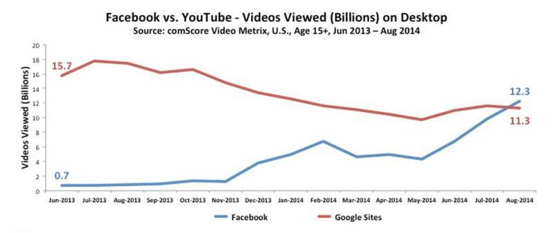
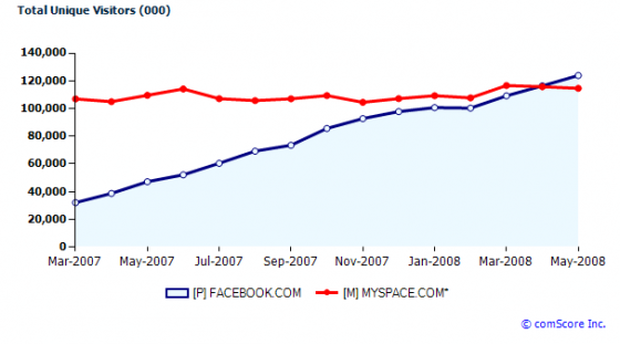

This Month in Video Marketing: October
September was a video marketing research-paloza for marketers. There were studies on what consumers are looking for from videos, research into new video marketing metrics & new video benchmarking statistics. While not as research heavy as last month, October brought interesting news about Facebook video views, how to use translations to increase video search referrals and data on the effect of video on sales. Here's what we poured over last month:
- Online Video Views Jump 43% in One Year, Internet TV by 388% [Report]: "As a nation, the U.S. watched, or started to watch, 38.2 billion videos in Q2 2014, that's an increase of 43% year-on-year, and contributes to the massive growth of online video consumption compared to 2013. Not only are online video views up, online TV viewing increased by 388%. Monthly unique views for online TV are up by 146% year-on-year, and by an incredible 85% in the last six months alone.” The full report is available from Adobe: "U.S. Digital Video Benchmark Report"
- Facebook, Helped By Autoplay, Passes YouTube For Desktop Video Views For First Time: 1 billion, that’s how many more desktop video views Facebook delivered in August over YouTube. While YouTube maintains its lead in mobile video views, these numbers are “pretty amazing,” according to comScore’s co-founder and executive chairman Emeritus Gian Fulgoni.

That graph looks eerily like the one of Facebook surpassing - the then #1 Social Networking site - MySpace in 2008.

- Content Creators Flee From YouTube, Flock to Facebook for Videos: “Marketers are increasingly turning to Facebook for video content – opting away from the YouTube-first, Facebook second approach that was so common. As Facebook has consistently outperformed YouTube in terms of driving views and engagement, content marketers have reacted and have switched to natively published Facebook videos.”
- Omnicom Advises Marketers to Move 10% to 25% of TV Ad Dollars To Online Video: In what will be good news to the online video industry (including TV networks whose programming makes up a large share of the premium online video market) Daryl Simm, chief executive officer of Omnicom Group’s media operations, has been advising clients to move 10% to 25% of their TV dollars to online video. We wonder what effect this will have on publisher’s like Def Jam who may be pulling away from YouTube due to lack of revenue.
- The Impact of Video on the Hidden Sales Cycle (sign-up required): Video Content Production Drives Customer Acquisition and Conversion: “Companies using video require 37% less visitors to achieve same results as those companies not using video, [have a ] 7.6% average website conversion rate, compared with 4.5% for Industry Average & 23% year-over-year increase in unique website traffic versus 8.8% increase for Industry Average." (Source)
- Translate Your Closed Captions & Reach a Wider Global Audience: “Video translation is vital to any global SEO strategy. The statistics don't lie: less than 27% of Internet users speak English as their primary language. Further, 80% of YouTube views come from outside the US, and 67.5% of YouTube views come from non-English speaking countries. This means that if you're not translating your videos, you're missing out on an opportunity to reach nearly 70% of YouTube users.”
-Team MediaNest